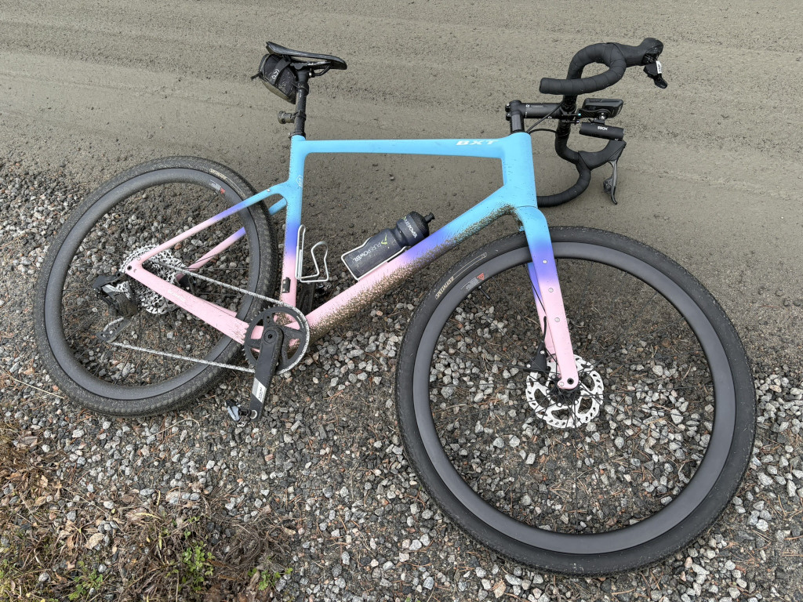
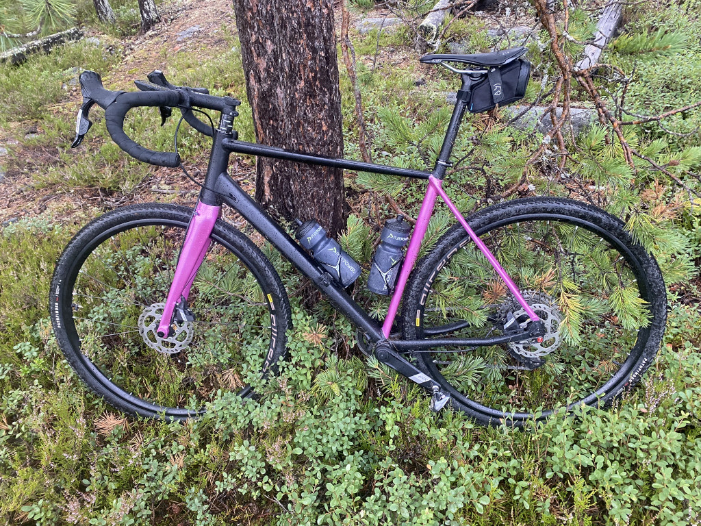

Bikes
My bikes, mostly for me to keep track of what the current configuration is.
Fizzy Pop
Aliexpress frame, wheels and saddle paired with more “standard” components.
- Frame: BXT Gravel-135 (XL)
- Saddle: Ryet Carbon
- Handlebars: Easton AX EA70 (42cm)
- Groupset: SRAM Apex XPLR
- Wheels: CSC Carbon Wheels (35mm deep)
- Tyres: Specialized Pathfinder Pro (42mm)

Superior X-Road Comp 2018
The only parts left since it was bought is the frame (repainted) and handlebars. The front fork has been converted for use with a 12x100 axle instead of 15x100.
- Frame: Superior X-Road Comp (58)
- Saddle: PRO Stealth Sport (142mm)
- Handlebars: Superior (44cm)
- Groupset: Shimano GRX-400
- Wheels: Mavic Allroad
- Tyres: Maxxis Rambler (40mm)
